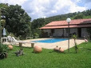
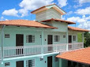
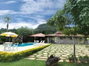
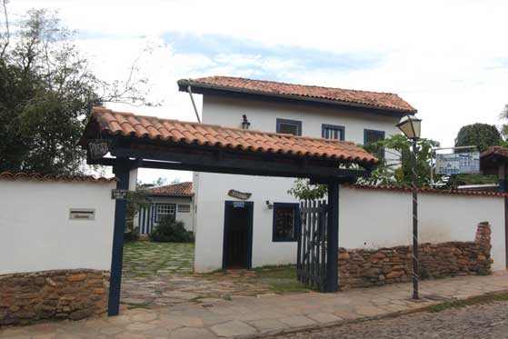

Casas Rurais:

Chácara Morro Grande: Lugar belíssimo aos pés da Serra dos Pireneus Chácara a 5km da cidade.
Endereço: Morro Grande, 5 km da cidade, Zona Rural, Pirenópolis, GO.
Chácara Gama: 05 quartos, cozinha completa e área com churrasqueira. Piscina, campinho e represa. Lugar tranquilo, aconchegante e de fácil acesso.
Endereço: GO 338, 13 km da cidade, Zona Rural, Pirenópolis, GO.

Casa e Chácara do Edson: Próxima da Matriz e Rua do Lazer. Com 3 quartos, sendo 1 suítes. Acomodação para até 10 pessoas. Temos chácara também para aluguel.
Endereço: Rua 02, Qd 01, Lt 08, Centro, Pirenópolis, GO.

Pirenópolis Hospedagem: Pousadas. Casas e chácaras para temporada. Sempre uma boa opção.
Endereço: Pirenópolis, GO.
Fazenda Recanto das Águas: Toda a sua estrutura para você que deseja uma fazenda para temporada com a família, amigos ou para eventos e festas.
Endereço: GO 431, Zona Rural, Pirenópolis, GO.

Recanto Tia Olívia: 7 km de asfalto e 900 m de chão, com piscina, churrasqueira, forno de pizza, fogão a lenha e acomodação para 12 pessoas; Casa a 200 m da rua do Lazer com acomodação para 10 pessoas.
Endereço: Zona Rural, Pirenópolis, GO.
Chácara Tia Isabel: Para aluguel de temporada, feriados, finais de semana e eventos na linda cidade de Pirenópolis.
Endereço: Go 338, Barbosa, Zona Rural, Pirenopolis, GO.
Fazenda Boa Vista: Aluguel para temporada e eventos. Capacidade para 15 pessoas em leitos e espaço para eventos de até 400 pessoas.
Endereço: GO 431, Fazenda Boa Vista, Zona Rural, Pirenópolis, GO.
Recanto Gaia: Bem próximo às saídas das principais cachoeiras. Belo visual da Serra dos Pireneus. Acomodação para até 20 pessoas.
Endereço: Fazenda José Leite, Zona Rural, Pirenópolis, GO.
Chácara Mangabeira: A 7 km da cidade com 700 metros de chão. Área de lazer separada da casa com piscina e churrasqueira.
Endereço: GO-338, 7 km sentido Goianésia, Pirenópolis, GO.
Solar dos Pireneus: casa de charme em estilo colonial, decorada com capricho e elegância, como se fosse um apartamento de uma boa pousada. Está localizada a 5 km do Centro de Pirenópolis e foi especialmente projetada para atender a aluguel por temporada com aconchego.
Endereço: GO 338, entrada após Venda do Bento, Pirenópolis, GO.
Castelo das Águas: Tranquilidade e sossego em meio ao canto dos pássaros, som da cachoeira e correntes águas cristalinas, um mirante com vista panorâmica do nosso precioso Bioma Cerrado e parte da nossa linda e mágica cidade de Pirenópolis.
Endereço: Serra dos Pireneus, Estrada dos Pireneus km 5, Zona Rural, Pirenópolis, GO.
Recanto dos Pássaros: Chácara com casa ampla e toda avarandada 8 suítes, piscina e área de lazer com cozinha completa e churrasqueira.
Endereço: GO-431, 5 km da cidade, Pirenópolis, GO.
Pesque Pague Pousada Cabanas: Local privilegiado a 3 km do centro de Pirenópolis, com belezas naturais que garantem um final de semana bem aconchegante para você, sua família e seus amigos.
Endereço: GO 225, KM 3, Pirenópolis, GO.
Chácara Nossa Senhora da Glória: Ampla e confortável, com 8 quartos, piscina de água corrente, quiosque na beira do rio e muito mais para o seu descanso e lazer.
Endereço: GO-431, Km 10, Zona Rural, Pirenópolis, GO.
Chácara Dona Geni: Desfrute da paz e natureza com apenas 3 km de estrada de chão. Capacidade para até 20 pessoas.
Endereço: Morro Grande, Zona Rural, Pirenópolis, Go.
Chácara Ipê: 5km da cidade com apenas 500 metros de estrada de chão. Piscina e represa.
Endereço: GO-338, Próximo ao Posto Policial, Mateus Machado, Pirenópolis, GO.

Pousada do Sobrado: Centro Histórico de Pirenópolis pode curtir a cidade de perto, visitar lojinhas de artesanato e conhecer o que a cidade tem de melhor para mostrar.
Endereço: Rua Rui Barbosa, Qd118 lt24, Centro Histórico, Pirenópolis, GO.
Chácara Alma d'Água - Serra dos Pireneus: à beira da mata ciliar a poucos passos de uma paradisíaca cachoeira. Tranquilidade e silêncio. 5 suítes e 2 quartos, cozinha grande, fogão a lenha, lareira, sala, decks, várias áreas de lazer e varandas ao largo da mata. Capacidade para 17 pessoas.
Endereço: Estrada do Abade, Serra dos Pireneus, Pirenópolis, GO.
Chácara Ninho de Curiango: Piscina, represa, rancho na beira do córrego, churrasqueira, fogão a lenha, internet wi-fi e muito verde. Acomodação para até 20 pessoas.
Endereço: GO 431, Fazenda Sepúlvida, Zona Rural, Pirenópolis, GO.